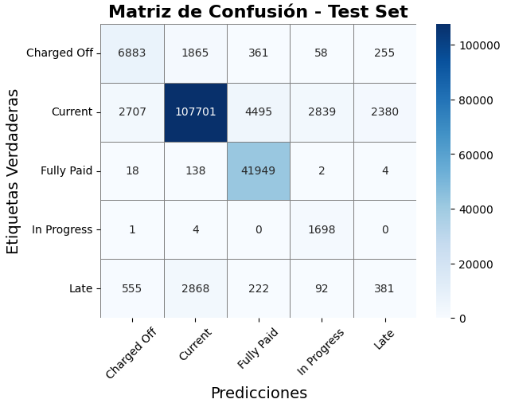

1 Introducción a la evaluación y gestión del riesgo de crédito
El riesgo de crédito, de acuerdo con información encontrada en el sitio web Financionario (n.d.) y, en concordancia con lo dicho por Tamplin (2023), se define como una medida empleada para dimensionar el riesgo (en términos de probabilidad) de que un prestatario incumpla con el pago de una obligación financiera o el reembolso del dinero correspondiente a un préstamo.
En este sentido, es posible notar que una correcta evaluación y gestión del riesgo de crédito es de vital importancia en las actividades relacionadas con el préstamo y la inversión, pues ayudan a que las entidades financieras puedan mantener su estabilidad, a la misma vez que se proyectan como instituciones de confianza ante las entidades estatales, sus socios y clientes. Adicionalmente, el riesgo de crédito suele tenerse en cuenta como un criterio a la hora de aprobar o definir las condiciones de un préstamo, solicitando garantías de respaldo al prestatario o ajustando la tasa de interés de acuerdo con estos resultados; la Figura 1 puede considerarse una imagen ilustrativa de las condiciones óptimas de crédito asignadas a un prestatario de acuerdo con su evaluación positiva del riesgo de crédito.
Figura 1.
Crédito y ahorro.  Adaptado de Ilustración del plan de ahorro de los empleados dibujada a mano [Ilustración], por Freepik, 2024 (https://www.freepik.es/vector-gratis/ilustracion-plan-ahorro-empleados-dibujada-mano_87161866.htm#fromView=search&page=1&position=11&uuid=e54defbf-b176-455c-82c3-276ae1b3c634&new_detail=true). Licencia gratuita.
Adaptado de Ilustración del plan de ahorro de los empleados dibujada a mano [Ilustración], por Freepik, 2024 (https://www.freepik.es/vector-gratis/ilustracion-plan-ahorro-empleados-dibujada-mano_87161866.htm#fromView=search&page=1&position=11&uuid=e54defbf-b176-455c-82c3-276ae1b3c634&new_detail=true). Licencia gratuita.
Sabiendo lo anterior, puede decirse que, tanto para las instituciones financieras como para quienes solicitan estos servicios, el riesgo de crédito es un factor de incertidumbre que influye en la toma de decisiones relacionada con la admisión de préstamos y otros productos financieros, entendiendo incertidumbre como “la falta de (…) certeza o de un conocimiento seguro respecto de una determinada situación”, según Gómez (2023).
1.1 Delimitaciones del problema y metodología
Considerando entonces la importancia del estudio del riesgo de crédito y sus implicaciones en las decisiones que toman las instituciones financieran que invierten y otorgan préstamos, así como las consecuencias que estas decisiones acarrean sobre las personas que los solicitas, se decide abordar esta cuestión a partir desde el punto de vista de los conocimientos adquiridos en el curso. Esto, pues la evaluación del riesgo de crédito involucra tareas como las que se enuncian a continuación:
Manejo de grandes volúmenes de datos: las entidades financieras o estatales poseen un amplio registro de información sobre los clientes que acceden a estos servicios, tales como sus comportamientos de pago y datos demográficos.
Identificación de patrones no evidentes: la probabilidad de incumplimiento de un cliente con sus pagos no siempre tendrá una relación lineal con las características que se conocen acerca de su persona, por lo que pueden necesitarse técnicas de mayor complejidad para descubrir los patrones o relaciones que lo explican.
Toma de decisiones basadas en riesgo: correspondiente al objetivo final de la presente actividad, se es importante realizar una clasificación de los clientes según su nivel de riesgo de crédito, asignando un puntaje que permita evaluar cualitativa y cuantitativamente las solicitudes de préstamo.
Dicho esto, puede verse que la elaboración de una herramienta que permita una evaluación adecuada del riesgo de crédito sería altamente beneficiosa no solo para las entidades financieras, que contarían con un medio de conocer mejor a sus posibles clientes, sino también para estos últimos, pues tendrían la oportunidad de conocer con antelación las posibilidades de que su crédito sea aprobado así como las variables que influirían en esa decisión.
Para tal fin se desarrollará una aplicación web que permitirá responder a la pregunta: ¿cuál es el puntaje de riesgo de crédito de un posible prestatario? a través de la utilización de un modelo de redes neuronales artificiales entrenado sobre un amplio conjunto de datos en este contexto. El dataset a emplear, titulado Credit Risk Analysis y proporcionado por G. (2021) será tratado con la siguiente metodología y posteriormente evaluado, como podrá verse más adelante.
Metodología
- Análisis descriptivo e hipótesis del conjunto de datos.
- Planteamiento y evaluación de modelos.
- Conclusiones y aprendizajes a partir del modelo.
- Planteamiento de un caso de uso.
A continuación se da inicio al desarrollo de la actividad, la cual será complementada con todos los recursos empleados y productos resultantes de dicho ejercicio.
1.2 Análisis descriptivo e hipótesis del conjunto de datos
1.3 Planteamiento y evaluación de modelos
1.3.1 Modelo de Redes Neuronales Artificiales
Las redes neuronales artificiales son modelos computacionales agrupados dentro del machine learning, con los cuales se busca simular el comportamiento del cerebro humano, de acuerdo con UNIR Revista (2021) y IBM (2025). Su funcionamiento imita el procedimiento con el que trabajan en conjunto las neuronas biológicas para aprender de la información que reciben desde el exterior o por parte de otras neuronas.
Gracias a su comportamiento, basado en la utilización de datos de entrenamiento para mejorar paulatinamente la precisión de sus resultados, las redes neuronales permiten la realización de tareas que no se podían automatizar en otro tipo de modelos, lo que ha llevado al desarrollo de avances significativos en el área de la inteligencia artificial e impactando de forma directa a las personas e industrias.
Considerando lo dicho anteriormente, es posible ver que las redes neuronales artificiales son una gran alternativa a la hora de enfrentar tareas relacionadas con el aprendizaje a partir de un conjunto de datos, encontrando patrones que puedan explicar el comportamiento de estos últimos respecto de alguna variable objetivo, con la finalidad de tomar una decisión después del entendimiento de dicho fenómeno. En este sentido, será utilizada una red neuronal para mejorar el resultado obtenido con el modelo de baja complejidad en el presente ejercicio.
1.3.1.1 Teorema de Aproximación Universal
Este teorema establece que:
“Cualquier función continua definida en un conjunto compacto puede ser aproximada arbitrariamente bien por una red neuronal feedforward con una sola capa oculta y un número suficiente de neuronas, utilizando funciones de activación no lineales”
Lo anterior significa que las funciones de activación no lineales son esenciales para que las redes neuronales puedan aproximar funciones complejas, como se puede observar en la Figura 2. Si bien el teorema garantiza que una sola capa oculta con suficientes neuronas puede aproximar cualquier función continua en un conjunto compacto, en la práctica, aumentar el número de capas suele ser más eficiente para modelar problemas complejos.
Figura 2.
Comparación entre resultados obtenidos mediante funciones lineales y no lineales. Nota. La gráfica muestra un comparativo entre los resultados obtenidos al aproximar una función a través de una función lineal y de una serie de funciones no lineales, observando que estas últimas permiten una aproximación mucho mejor en comparación con su contraparte lineal.
1.3.1.2 Arquitectura de una red neuronal artificial
Las redes neuronales están compuestas por un conjunto de nodos, que vendrían siendo las neuronas artificiales, repartidos en capas que pertenecen a alguna de las siguientes tres categorías, con información obtenida de Cloudflare (2025) y ParoleDevs (n.d.):
Capa de entrada: esta capa tiene conexión con el “mundo exterior” a la red neuronal artificial, recibiendo los datos iniciales que serán procesados por ella.
Capa de salida: esta capa proporciona el resultado del procesamiento realizado por la red neuronal, comúnmente como una predicción o una clasificación (lo cual se ve internamente en términos de probabilidad).
Capas ocultas: una o más capas que se encuentran entre las dos mencionadas anteriormente, realizando el procesamiento y extracción de características de los datos. Este análisis se realiza de menor a mayor profundidad, pues cada capa extrae los patrones más significativos de los datos que recibió como entrada y los envía a una capa superior para que sean vistos con más detalle.
Ahora bien, es conveniente conocer los elementos que componen a cada uno de los nodos que interactúan en las capas anteriormente mencionadas, pues de esta manera será posible comprender la importancia del correcto diseño de la arquitectura de una red neuronal artificial. De acuerdo con Burgos (n.d.), estos elementos son:
Entrada: los datos que recibe la neurona artificial del exterior o de otras neuronas, se representa como un vector \(x = (x_1, x_2, ..., x_n)\).
Pesos sinápticos: representan los factores de importancia \(w_{ij}\) que se le asignan a las entradas que cada neurona recibió de su anterior compañera. Son valores numéricos que se modifican durante el entrenamiento del modelo y poseen una vital importancia en el desempeño de este mismo frente al conjunto de datos del que está aprendiendo.
Regla de propagación: una operación que se aplica de forma primordial a los datos de entrada y los pesos para calcular el posible valor de la salida de la neurona artificial; generalmente es una suma ponderada pero también pueden ser otras clases de operaciones.
Función de activación capa de entrada: el valor obtenido con la regla de propagación se procesa con a través de esta función, a fin de obtener el verdadero resultado de salida de la neurona. Existe una gran variedad de funciones que se eligen de acuerdo con el objetivo de entrenamiento de la red neuronal artificial, entre las cuales se encuentran las siguientes:
- Identidad: la función identidad es una función lineal que devuelve el mismo valor de entrada como salida, como se observa en la Ecuación (1):
\[ f(x) = x \tag{1} \]
- Escalón: la función escalón devuelve un valor binario dependiendo de si la entrada supera un umbral \(\theta\), según lo visto en la Ecuación (2):
\[ f(x) = \begin{cases} 1 & \text{si } x \geq \theta \\ 0 & \text{si } x < \theta \end{cases} \tag{2} \]
- Lineal a tramos: la función lineal a tramos aplica una transformación lineal dentro de un rango específico, de acuerdo con la Ecuación (3):
\[ f(x) = \begin{cases} 0 & \text{si } x \leq 0 \\ x & \text{si } 0 < x \leq 1 \\ 1 & \text{si } x > 1 \end{cases} \tag{3} \]
- Sigmoide: la función sigmoide suaviza la salida en un rango entre 0 y 1, aplicando la expresión definida en la Ecuación (4):
\[ f(x) = \frac{1}{1 + e^{-x}} \tag{4} \]
- Gaussiana la función gaussiana calcula una salida basada en la forma de una campana, con media \(\mu\) y desviación estándar \(\sigma\), como se puede ver en la Ecuación (5):
\[ f(x) = e^{-\frac{(x - \mu)^2}{2\sigma^2}} \tag{5} \]
- Sinusoidal: la función sinusoidal genera una salida oscilatoria basada en una onda sinusoidal, es decir, la expresión dada en la Ecuación (6):
\[ f(x) = \sin(x) \tag{6} \]
Salida: resultado \(y_i\) del procedimiento aplicado sobre los datos de entrada.
Función de activación capa de salida:
- Softmax: permite convertir un conjunto de valores en probabilidades que suman 1. Se encuentra definida en la Ecuación (6) y su principal uso se encuentra en problemas de clasificación multiclase.
\[ \text{Softmax}(z_i) = \frac{e^{z_i}}{\sum_{j=1}^{n} e^{z_j}} \tag{6} \]
- Cross-entropy: mide la diferencia entre las predicciones \(\hat{y_i}\) y la real \(y\), para el caso de clasificación lo hace de la manera en que está definido en la Ecuación (7).
\[ \text{Cross-Entropy Loss} = - \sum_{i=1}^{n} y_i \log(\hat{y}_i) \tag{7} \]
- Sparse Cross-Entropy Loss es una variante de Cross-Entropy que no requiere codificación one-hot, sino que trabaja directamente con índices de las clases verdaderas, como se observa en la Ecuación (8).
\[ \text{Sparse Cross-Entropy Loss} = - \log(\hat{y}_{c}) \tag{8} \]
- Focal loss: es una extensión de Cross-Entropy que aplica un factor de penalización para enfocarse más en ejemplos mal clasificados, de acuerdo con la Ecuación (9). Es especialmente útil para casos de datasets desbalanceados.
\[ \text{Focal Loss} = - \alpha_t (1 - p_t)^\gamma \log(p_t) \tag{9} \]
donde $ p_t = _c $
1.3.1.3 Tipos de redes neuronales artificiales
Teniendo en cuenta las particularidades de la arquitectura de las redes neuronales artificiales, a continuación se detallan algunos tipos diferentes de modelos, clasificados según su diseño, así como sus correspondientes aplicaciones en diferentes campos de la academia y la industria.
Redes neuronales artificiales perceptrón: tienen la arquitectura más sencilla, compuesta por nodos con una única función de activación, suelen utilizarse para tareas de clasificación binaria.
Redes neuronales artificiales multicapa: su arquitectura está conformada por capas de neuronas artificiales interconectadas y son utilizadas para tareas más complejas como toma de decisiones y clasificación multiclase.
Redes neuronales artificiales convolucionales: estas redes están especialmente diseñadas para realizar tareas relacionadas con el reconocimiento de imágenes, pues utilizan filtros convolucionales para identificar patrones y características especiales en cada pixel.
Redes neuronales artificiales recurrentes: suelen ser empleadas para tareas como reconocimiento de voz, traducción automática y generación de texto por su capacidad para procesar datos secuenciales, donde toda la información está relacionada entre sí y posee un contexto común para explicarse.
1.3.1.4 Aplicaciones de las redes neuronales artificiales
Algunas de las aplicaciones de las redes neuronales en la actualidad incluyen las siguientes:
- Reconocimiento de imágenes: las redes neuronales pueden ser utilizadas para identificar personas y objetos en imágenes y videos.
- Procesamiento del lenguaje natural: las redes neuronales pueden utilizarse en tareas de comprensión del lenguaje como la traducción automática, la generación de texto y el reconocimiento de voz.
- Toma de decisiones: las redes neuronales pueden ser herramientas de ayuda para la toma de decisiones en situaciones complejas tales como el análisis financiero, que es el caso del presente ejercicio y el diagnóstico médico, entre otras.
- Sistemas de recomendación: las redes neuronales pueden ser empleadas para generar recomendaciones personalizadas con base en las preferencias del usuario en diferentes plataformas de streaming, comercio electrónico y redes sociales. Profe Digital (n.d.)
1.4 Construcción del Modelo de Aprendizaje Automático
Como podrá observarse detalladamente más adelante, la conexión entre las diferentes neuronas artificiales permite el aprendizaje de patrones complejos. El video presentado en la Figura 3 es una representación artística de este planteamiento.
Figura 3.
Conexión entre las neuronas del modelo.
Tomado de Sora OpenAI.1.4.1 Preprocesamiento
Después de haber jugado con el dataset en la sección anterior para los análisis descriptivos y exploratorios, se continúa con la realización del preprocesamiento de los datos, necesario para que la arquitectura de la red neuronal sea capaz de recibirlos y además ayudar a mejorar su rendimiento. Como primer paso, se dividió el conjunto de datos en entrenamiento, validación y prueba para evitar cualquier tipo de data leakage durante el preprocesamiento.
1.4.1.1 Codificación de variables categóricas
En total se emplearán tres estrategias para la clasificación de las variables categóricas según su naturaleza.
Ordinal Encoder: esta técnica se aplicó cuando las variables categóricas presentaban un orden natural. La codificación numérica asignada reflejaba este orden, asegurando que los valores fueran representativos de su jerarquía inherente.
Label Encoder: se empleó en variables categóricas binarias. Este enfoque evitó imponer un orden ficticio entre los valores, lo que podría generar sesgos al interpretar una relación inexistente entre las categorías.
One Hot Encoding: Diseñada para variables categóricas sin un orden natural y con más de dos niveles. Cada categoría fue representada mediante un vector binario, donde un valor de 1 indica pertenencia a una categoría específica y e asigna 0 a las demás. Se prestó especial atención al número de niveles en cada variable. En casos con muchas categorías, esta técnica podría haber generado una matriz de alta dimensionalidad, aumentando los requerimientos computacionales y complicando el entrenamiento de la red neuronal. Para evitar estos problemas, se evaluó cuidadosamente la viabilidad de aplicar este método en cada caso.
1.4.1.2 Selección de características
La técnica de imputación de datos faltantes elegidas fue Iterative Imputer para las variables numéricas, debido a que muestra mejores capacidades en manejar relaciones complejas que otros métodos de imputación como lo son la media o similares, gracias a que considera todo el dataset de manera conjunta en lugar de una sola columna. Para el caso de las variables catgóricas, se utilizó la imputación mediante mediana.
1.4.1.3 Estandarización
Fue utilizado el método StandardScaler, considerando que normaliza las características al cnetrar su media en 0 y escalando según la desviación estándar, lo cual es crucial en redes neuronales para garantizar estabilidad numérica y mejorar la eficiencia del entrenamiento.
Esto previene problemas como:
- Gradiente explosivo: valores extremos en las entradas producen gradientes excesivamente grandes, causando desbordamientos numéricos y actualizaciones erráticas de pesos.
- Gradiente desvaneciente: gradientes extremadamente pequeños ralentizan la convergencia, dificultando el aprendizaje efectivo.
La fórmula utilizada por este método de escalamiento puede observarse en la Ecuación (10):
\[ X' = \frac{X - \mu}{\sigma} \tag{10} \]
donde
- \(X\): Valor original.
- \(u\): Media de los datos.
- \(sigma\): Desviación estándar de los datos.
Este método asegura que las características tengan una varianza de 1 y estén centradas en 0, permitiendo que funciones de activación como sigmoid y tanh operen eficientemente.
1.4.1.4 Balanceo de clases
El análisis descriptivo mostró que la variable respuesta del dataset está altamente desbalanceada, lo cual representa un reto significativo al crear el modelo. Un modelo entrenado en estas condiciones puede tender a predecir únicamente la clase mayoritaria, generando métricas como el accuracy con valores engañosamente altos, pero sin reflejar una verdadera capacidad predictiva. Para abordar este problema, se emplearán las siguientes técnicas:
Sobremuestreo y Submuestreo: esta estrategia, ilustrada en la Figura 4, combina el aumento de las clases minoritarias mediante sobremuestreo y la reducción de las clases mayoritarias mediante submuestreo. El objetivo es equilibrar la cantidad de datos entre las clases, incentivando al modelo a aprender las características de todas las clases y mejorando sus métricas al minimizar la función de pérdida. Esto fue utilizado para todas las clases en el entrenamiento y el valor final para cada clase fue el siguiente:
Current: 150.000
Fully Paid: 125.700
Charged Off: 50.000
Default: 50.000
Issued: 50.000
Figura 4.
Ilustración del funcionamiento de las técnicas de sobremuestreo y submuestreo. Tomado de Handling imbalanced dataset in supervised learning using family of SMOTE algorithm, por RohitWalimbe, 2017 (https://www.datasciencecentral.com/handling-imbalanced-data-sets-in-supervised-learning-using-family)
- Agrupamiento de las clases: en esta estrategia se agruparon algunas de las clases con una menor cantidad de datos, teniendo en cuenta que, como se verá más adelante, son clases que tienen tan pocos datos que predecirlas es altamente complejo; esto pone en evidencia las limitaciones de las técnicas de sobremuestreo y submuestreo en la presencia de clases altamente desbalanceadas.
1.4.2 Diseño y Arquitectura
Todo lo descrito a continuación fue implementado mediante Tensorflow.
1.4.2.1 Modelo simple
1.4.2.1.1 Evaluación del modelo
Utilizaremos la métrica más simple posible, que es la que toma Tensorflow por defecto, el accuracy.
Función de pérdida
La función de pérdida a elegir, es sparse categorical cross entropy, la cual esta pensada para problemas de clasificación multiclase donde la variable esta codificada mediante Ordinal o Label Encoder, no mediante One Hot Encoding (para este caso usar sparse cross entropy).
1.4.2.1.2 Capas
Capa de entrada.
La capa de entrada está definida para recibir un número de características igual a la dimensión de los datos en el conjunto balanceado.
Primera Capa Oculta.
Contiene 32 neuronas con activación ReLU, lo que permite que el modelo aprenda patrones no lineales en los datos. Además se agrego regularización \(L_2\) para evitar el sobreajuste, y un dropout del 20% para reducir la posibilidad de sobreajuste.
Capa de Salida.
La capa de salida contiene tantas neuronas como clases en el problema, se utiliza la función de activación softmax para convertir las salidas en probabilidades.
1.4.2.1.3 Resultados del modelo de baja complejidad
Evolución de las métricas
Figura 5.
Es posible notar en la Figura 5 que, durante el entrenamiento, el modelo tiene una función de pérdida muy alta y una precisión que, en vez de incrementar, va disminuyendo en los datos de validación a pesar de que empieza en un valor muy alto. Los motivos por los cuales sucede esto serán abordados más adelante de una manera específica.
Evolución de las métricas del modelo a través de las épocas durante el proceso de entrenamiento. Elaboración propia.
Reporte de clasificación
Matriz de confusión
De acuerdo con la matriz de confusión observada en la Figura 6, se pueden notar ciertas dificultades para predecir clases como Fully Paid. Sin embargo, el modelo predice bien clases como Charged Off y Current.
Figura 6.
Matriz de confusión del modelo de baja complejidad. Elaboración propia.
1.4.2.2 Modelo con mayor complejidad
1.4.2.2.1 Evaluación del modelo
Dado el desbalance de la variable objetivo, utilizaremos métricas diseñadas para proporcionar una evaluación más equitativa del modelo:
- F1-Score Macro: a diferencia de métricas como el accuracy, que tienden a favorecer la clase mayoritaria en datasets desbalanceados, el F1-Score Macro asigna igual importancia a todas las clases, independientemente del número de muestras. Esto nos brinda una evaluación más realista del desempeño del modelo.
1.4.2.2.2 Función de pérdida
Para abordar el desbalance de clases durante el entrenamiento, utilizaremos técnicas como:
Focal Loss: esta función de pérdida está diseñada específicamente para problemas de clasificación desbalanceados. Su objetivo es priorizar las clases minoritarias al reducir la importancia de las predicciones correctamente clasificadas para las clases mayoritarias. Esto ayuda al modelo a concentrarse más en aprender las características de las clases menos representadas.
Pesos de las Clases: en algunos casos, asignar pesos inversamente proporcionales al tamaño de cada clase en la función de pérdida puede ser una estrategia complementaria para equilibrar la importancia de las clases en el modelo.
1.4.2.2.3 Callbacks
Early Stopping: permite reducir los tiempos de entrenamiento al monitorear una métrica, y dado un parámetro de paciencia que indica cuantas Epoch esperar, detiene el entrenamiento si la mejora después de cumplida la paciencia no es lo suficientemente significativa para justificar seguir entrenando.
Reduce Learning Rate on Plateu: ayuda a mantener la capacidad de mejora durante el entrenamiento, los cálculos del gradiente, que dependen de la tasa de aprendizaje pueden no ser capaces de llegar al mínimo de la función de pérdida, por lo que este callback reduce la tasa de entrenamiento si para una cantidad de Epochs dada, no ha habida una mejoría en los resultados, esto permite tener un aprendizaje con capacidad de mejoría a través de las Epochs.
1.4.2.2.4 Capas
Las capas definidas en el modelo fueron las siguiente:
Capa de entrada.
Define el tamaño de entrada , el cual corresponde al numero de características con el dataset ya balanceado, para recibir los datos que serán procesados en las siguientes capas.
Primera Capa Oculta.
Esta capa contiene 128 neuronas con una activación ReLU, que introduce no linealidades y permite que el modelo aprenda patrones complejos. Se utiliza la regularización \(L_2\) con un valor de \(1 \times 10^{-4}\) para evitar el sobreajuste, penalizando pesos grandes. Se utiliza BatchNormalization() para mantener un entrenamiento estable. Se sigue utilizando un valor de desactivación del 20% para reducir la posibilidad de sobreajuste mediante Dropout().
Segunda Capa Oculta.
La cantidad de neuronas se reduce a 64, permitiendo que el modelo capture características más detalladas y específicas. Se mantiene la normalización y el dropout con los mismos parámetros de la capa anterior.
Tercera Capa Oculta.
La cantidad de neuronas se reduce a 64, permitiendo que el modelo capture características más detalladas y específicas. Se mantiene la normalización y el dropout con los mismos parámetros de la primera capa oculta.
Capa de Salida.
Esta capa tiene una neurona por cada clase del problema de clasificación multiclase. La activación Softmax convierte las salidas en probabilidades, asegurando que la suma de las probabilidades sea igual a 1, lo que es esencial para clasificación multiclase.
1.4.2.2.5 Resultados del modelo
Evolución de las métricas
En la Figura 6 se puede evidenciar cómo la función de pérdida va disminuyendo a lo largo de las épocas, con lo cual se va obteniendo un accuracy mucho más alto.
Figura 6.
Evolución de las métricas obtenidas por el modelo a través de las épocas.  Elaboración propia.
Elaboración propia.
Finalmente se ha de observar que en el entrenamiento los resultados son muy estables mostrando una convergencia, mientras que en la validación tiende a fluctuar, pero mostrando buenos resultados a pesar de las flucutaciones, ya que ninguna es extrema.
1.4.2.3 Reporte de clasificación
A continuación se muestra una visión mucho más clara de los resultados obtenidos por el modelo para el conjunto de prueba, ya que en los problemas multiclase puede llegar a ser engañoso considerar solamente la métrica global calculada por el modelo. En los resultados mostrados por la Tabla 1, se evidencia que la clase Default es la que presenta más dificultades para el modelo.
Tabla 1.
Reporte de clasificación del modelo de mayor complejidad.
| Clase | Precision | Recall | F1-score | Support |
|---|---|---|---|---|
| Charged Off | 0.3117 | 0.6172 | 0.4142 | 9158 |
| Current | 0.9466 | 0.9471 | 0.9468 | 120122 |
| Default | 0.1646 | 0.1490 | 0.1564 | 4382 |
| Fully Paid | 0.9846 | 0.7334 | 0.8406 | 42111 |
| Issued | 0.4362 | 0.9789 | 0.6034 | 1703 |
| Accuracy | - | - | 0.8600 | 177476 |
| Macro avg | 0.5687 | 0.6851 | 0.5923 | 177476 |
| Weighted avg | 0.8986 | 0.8600 | 0.8713 | 177476 |
F1-score macro: 0.5439
Recall macro: 0.7302
Elaboración propia.
Matriz de confusión
Igualmente, en la Figura 7 se observan cuántos datos de cada clase fueron clasificados correctamente en la diagonal principal de la matriz de confusión. También se observan las dificultades que tuvo el modelo, así como su claridad para predecir algunas de las clases en el problema.
Figura 7.
Matriz de confusión obtenida al evaluar el conjunto de prueba en el modelo.  Elaboración propia.
Como mejoras a futuro se consideraría enriquecer el modelo teniendo una mayor cantidad de datos para las clases más difíciles de clasificar, junto con una mayor recopilación de información del banco, que apunte a las características de estas personas.
1.5 Conclusiones y aprendizajes a partir de los modelos
En este punto, se pone en evidencia el problema de utilizar métricas como accuracy en lugar del f1-score cuando los datos se encuentran desbalanceados, resaltando la importancia de hacer un análisis exploratorio del dataset.
Los resultados que se mostrarán a continuación muestran que el desarrollo del modelo fue un problema retador, tanto por el alto volumen de datos como por el desbalanceo de las clases, ambos factores que añaden dificultad al problema, sin embargo, fue posible darles un tratamiento correcto para obtener una mejor solución.
1.5.0.1 Pesos del modelo
Después de entrenar el modelo se puede ver cuáles son las características más relevantes bajo los paramétros que maximizan la capacidad predictiva del modelo. Es importante tener en cuenta que cada capa se concentra en diferentes tipos de patrones, más simples o complejos, por lo que el peso de las características va variando a lo largo del entrenamiento en cada una de ellas. A continuación se observa el resultado obtenido para cada capa:
Primera Capa
- home_ownership_OWN: El prestatario es propietario de su vivienda.
- funded_amnt: La cantidad desembolsada del préstamo hasta el momento.
- total_rec_int: El interés total recibido.
Segunda capa
- revol_util: Cantidad de crédito que el prestatario está utilizando en relación con todo el crédito disponible.
int_rate: Tasa de interés del préstamo.
- tot_cur_bal: Balance total actual de todas las cuentas del prestatario.
total_pymnt: Pagos totales recibidos hasta la fecha para la cantidad total financiada.
Tercera capa
- int_rate: Tasa de interés del préstamo.
- dti: Porcentaje del ingreso mensual del prestatario destinado al pago de deudas.
- grade_encoded: Grado asignado al préstamo por LC.
- installment: Pago mensual que debe realizar el prestatario.
- total_rev_hi_lim: Límite máximo de crédito disponible en líneas de crédito revolvente.
Cuarta Capa
- total_rec_prncp: Capital total recibido hasta el momento.
- revol_util: Cantidad de crédito que el prestatario está utilizando en relación con todo el crédito disponible.
- tot_cur_bal: Balance total actual de todas las cuentas del prestatario.
- home_ownership_OWN: El prestatario es propietario de su vivienda.
Quinta capa
- tot_cur_bal: Balance total actual de todas las cuentas del prestatario.
- total_rec_prncp: Capital total recibido hasta la fecha.
- emp_length_encoded: Codificación de la longitud del empleo.
- total_rec_late_fee: Tarifas por pagos tardíos acumuladas hasta la fecha.
1.6 Puesta en producción del modelo
Debido a la naturaleza del proyecto, tareas como lo son la monitoría del modelo se dejan como futuras mejorías, nos centraremos específicamente en dos.
1.6.1 Creación de la API
Se utilizó el framework de Python llamado FastAPI Ramírez (2018) para convertir el modelo en una API que pudiera realizar predicciones de acuerdo con la información de cada usuario. En el repositorio de GitHub se encuentra el archivo con el código necesario para lograr este resultado.
1.6.2 Despliegue del modelo
Adicionalmente, se empleó Render como servicio de computación en la nube para desplegar el modelo. Esta plataforma fue elegida por su simplicidad para realizar la tarea además de la posibilidad que brinda de utilizar recursos gratuitos.
Para observar el resultado se pueden consultar los siguientes archivos, necesarios para el despliegue en el repositorio desde donde se realizó dicha actividad: Repositorio despliegue del modelo.
Dockerfile: describe como construir la imagen de tal manera que contenga todas las dependencias necesarias define el puerto de ejecución de la API.
requirements.txt: contiene los nombres y las versiones de todos los paquetes necesarios para ejecutar la API.
app.py: archivo con la API creada utilizando FastAPI que define los parámetros necesarios para llamar la API y obtener predicciones con el modelo entrenado.
Además se agregó un workflow con GitHub Actions para automatizar el despliegue del modelo a la última versión en Render, lo cual es el inicio del monitoreo necesario para el modelo como un agregado que se puede profundizar más en el futuro.
1.7 Caso de uso
A continuación se desarrollará un caso de uso que ejemplifica cómo el uso del modelo desplegado anteriormente a través de una aplicación web puede traer beneficios a las entidades bancarias en los procesos de toma de decisiones, así como darle una mayor claridad a los usuarios de estos servicios, en términos de cononocer los motivos por los cuales se toman ciertas decisiones respecto a sus préstamos o productos bancarios (como puede ser la venta de cartera o similares).
Caso del banco
Caso del usuario
2 Aplicación web
3 Video publicitario
3.1 Contribuciones individuales
Las contribuciones realizadas por cada uno de los integrantes del equipo en el desarrollo de los ejercicios correspondientes a Modelos de riesgo de crédito con Redes Neuronales Artificiales se muestran en el siguiente video.